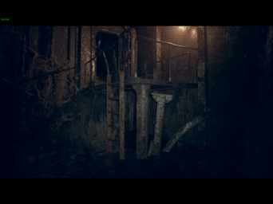
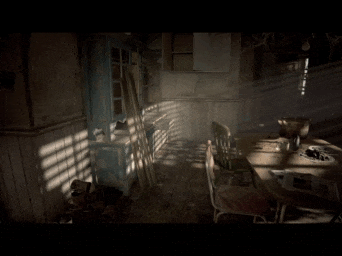

Os acontecimentos que transformaram Dulvey em um pesadelo.
- A Evolução da Franquia em RE7:
- Mudança para câmera em primeira pessoa
- Protagonista Ethan Winters, um civil comum
- Cenário na fazenda isolada em Dulvey, Louisiana
- Foco em horror psicológico e sobrevivência
- Detalhes da Imersão
- Clima claustrofóbico
- Inspiração em O Massacre da Serra Elétrica
- Uso da RE Engine fotorrealista
- Abandono da ação exagerada

Os eventos que transformaram Dulvey num pesadelo absoluto não começaram com os Baker, eles começaram muito antes, num laboratório frio e sem alma da organização criminosa The Connections que não queria criar um vírus, queria criar uma arma perfeita, silenciosa, que não precisasse de exército, e o resultado foi a E-001, Eveline, uma garota de dez anos por fora, linda, de vestido sujo, mas por dentro uma arma biológica da série E, pura maldade concentrada, o corpo dela não é um corpo, é uma colônia que produz um fungo superorganismo chamado Megamiceto, uma coisa preta, viscosa, que se espalha como raiz por baixo da terra, pelas paredes, pelas pessoas, quem respira isso é infectado, o fungo entra no cérebro, cura qualquer ferida, deixa a pessoa praticamente imortal, mas rouba a mente e faz a pessoa ver a Eveline como filha e fazer qualquer coisa por ela, mesmo matar e torturar, e os Baker foram as primeiras vítimas reais desse experimento, Jack era só um fazendeiro trabalhador que virou o chefe incansável, um pesadelo que não morre, você atira nele, corta a perna, taca fogo, e ele levanta rindo com o rosto derretido te perseguindo com uma pá gritando "bem-vindo à família, filho!", Marguerite era a dona de casa que virou uma criatura desequilibrada que vive nos vãos úmidos da casa controlando enxames de insetos que saem da sua pele, e Lucas, que já era doente antes do fungo, sádico e genial, não foi controlado totalmente porque é psicopata e transformou o celeiro numa Disney de jogos mortais com armadilhas e fitas de vídeo das suas vítimas, e a casa dos Baker não é só um cenário, ela é um ser vivo que respira mofo, que geme, as tábuas rangem sozinhas, tem passagens escondidas atrás de estantes e fitas VHS que te mostram exatamente como as outras pessoas morreram ali.
- A Origem do Pesadelo
- Criação de Eveline pela organização The Connections
- Infecção pelo fungo Megamiceto
- Transformação da família Baker
- Casa como organismo vivo cheio de segredos
- A Família Baker
- Jack Baker, o patriarca imortal
- Marguerite e o controle de insetos
- Lucas e seus jogos mortais
- Fitas VHS que revelam o passado

Diferente de outros jogos, Resident Evil 7 não te dá poder, ele te rouba até o último pingo de confiança que você tem, porque nos outros Resident você era uma máquina de matar e aqui você é uma presa, a munição é tão escassa que você conta cada bala, anda com uma pistola com 3 tiros pensando se vale a pena gastar num mofado ou guardar pro Jack, a cura é pouca, erva é rara, fluido químico nem se fala, você fica o tempo todo no vermelho, mancando, com a visão embaçada, e muitas vezes a coisa mais inteligente que você pode fazer não é lutar, é se humilhar se enfiando embaixo da cama fedida, se trancando dentro de um armário escuro sem respirar, ouvindo os passos pesados do Jack destruindo a parede de drywall atrás de você, e a Capcom usou a força bruta da RE Engine pra fazer isso doer de verdade, nunca um Resident foi tão real, a luz da lanterna tremendo no escuro, o reflexo do sangue no chão molhado, o som 3D que aperta o peito, onde cada pisada na madeira velha estalando e cada suspiro ofegante do Ethan aumentam o aperto até você não aguentar mais, mais que um jogo de sustos baratos é uma história sufocante sobre família, sobre parentesco tóxico, sobre fixação e a dificuldade doentia de soltar, sobre o que uma família faz pra se manter junta mesmo quando já apodreceu por dentro, e no meio disso tudo ela costura tudo, une o tempo antigo da Umbrella com o tempo novo da história, arrumando perfeitamente a estrada para Resident Evil Village, mostrando o Megamiceto e a origem da Miranda, e provando de uma vez por todas que o medo de verdade em Resident Evil nunca esteve nas criaturas que te perseguem, mas no que elas fazem com quem a gente gosta, como elas transformam amor em prisão.
- Como Sobreviver em Dulvey
- • Munição e recursos escassos
- • Necessidade de fugir e se esconder
- • Puzzles e exploração da mansão
- • Conexão direta com Resident Evil Village
- Elementos de Terror
- Design de som angustiante
- Gráficos fotorrealistas
- Inimigos quase indestrutíveis
- História sobre família e obsessão

SAIBA MAIS EM:https://www.residentevil.com/7/us/
Tópico
Informações
A Evolução da Franquia em RE7
• Mudança para câmera em primeira pessoa
• Protagonista Ethan Winters, um civil comum
• Cenário na fazenda isolada em Dulvey, Louisiana
• Foco em horror psicológico e sobrevivência
A Origem do Pesadelo
• Criação de Eveline pela organização The Connections
• Infecção pelo fungo Megamiceto
• Transformação da família Baker
• Casa como organismo vivo cheio de segredos
Como Sobreviver em Dulvey
• Munição e recursos escassos
• Necessidade de fugir e se esconder
• Puzzles e exploração da mansão
• Conexão direta com Resident Evil Village
Detalhes da Imersão
Clima claustrofóbico, inspiração em O Massacre da Serra Elétrica, uso da RE Engine fotorrealista, abandono da ação exagerada
A Família Baker
Jack Baker, o patriarca imortal, Marguerite e o controle de insetos, Lucas e seus jogos mortais, fitas VHS que revelam o passado
Elementos de Terror
Design de som angustiante, gráficos fotorrealistas, inimigos quase indestrutíveis, história sobre família e obsessão
| Tópico | Informações |
|---|---|
| A Evolução da Franquia em RE7 |
• Mudança para câmera em primeira pessoa • Protagonista Ethan Winters, um civil comum • Cenário na fazenda isolada em Dulvey, Louisiana • Foco em horror psicológico e sobrevivência |
| A Origem do Pesadelo |
• Criação de Eveline pela organização The Connections • Infecção pelo fungo Megamiceto • Transformação da família Baker • Casa como organismo vivo cheio de segredos |
| Como Sobreviver em Dulvey |
• Munição e recursos escassos • Necessidade de fugir e se esconder • Puzzles e exploração da mansão • Conexão direta com Resident Evil Village |
| Detalhes da Imersão | Clima claustrofóbico, inspiração em O Massacre da Serra Elétrica, uso da RE Engine fotorrealista, abandono da ação exagerada |
| A Família Baker | Jack Baker, o patriarca imortal, Marguerite e o controle de insetos, Lucas e seus jogos mortais, fitas VHS que revelam o passado |
| Elementos de Terror | Design de som angustiante, gráficos fotorrealistas, inimigos quase indestrutíveis, história sobre família e obsessão |